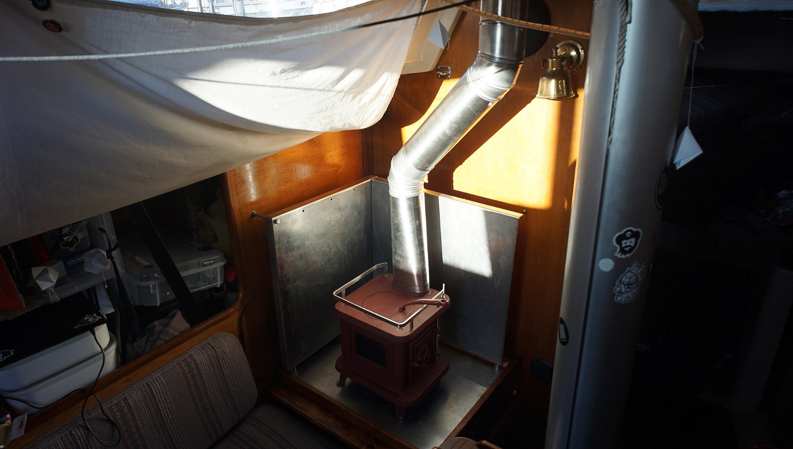
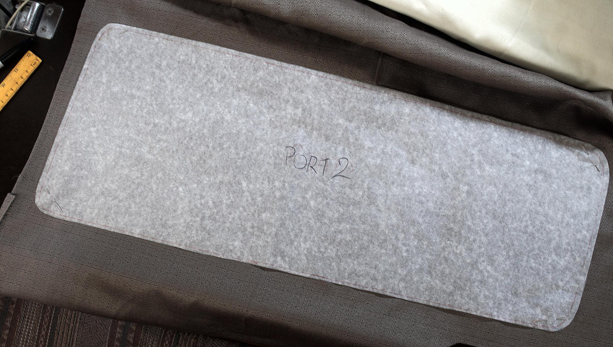
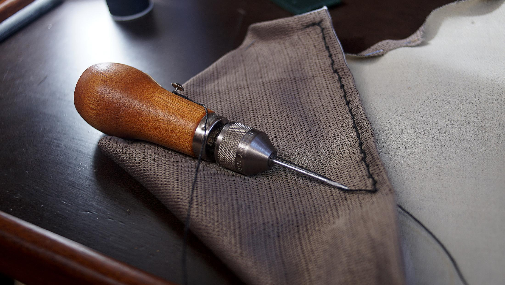

curtains
Our boat has very large windows, and did not come with any means of attaching curtains.
For a while, we simply attached a bed sheet that we had cut to size with 6 grommets (2 in the center, and 2 at each corner) it helped to dim the light, but did little to block it out. The curtain had a loose fit, and made the boat appear much narrower than it was. We used a wooden rail on the ceiling to tie it up, but it stopped short of the 3rd window.
This year we decided to make custom curtains for each window, for added privacy when we share a dock with others, to block out light on sunny mornings, and as a means of insulating the windows in the winter.
Below is an image featuring the curtain setup we had before:
We wanted to avoid making holes, and so using velcro was our best option. We prefer to avoid making holes in fibreglass if we don't have to.
We made templates of our windows on wax paper (it's what we had, and it works well). The wax paper was the right height, covering the window entirely. We cut out rough shapes, taped them to the wall over each window, and drew out the shape with a marker. Then, I cut along the line, and labelled each template, like "star 1" for starboard window, first from the bow etc.
We found some curtains at the thrift store to use for this project. We laid out the fabric and placed our template on top, securing the template to the fabric with needles on the corners. We then measured, and marked a 3.5 cm border all around to accomodate a 1 cm seam (to prevent unravelling) and a 2 cm strip of velcro with extra padding.
We cut the fabric along the line, and folded the seam, laying the sticky strip velcro (soft side) over the folded seam. The strip would hold it down. We then stitched the velcro onto the fabric bottom and top edge using our sewing awl(speedy stitcher). The sides have no velcro, but we stitched the seams.
Then, we added strips of velcro (hook side) to the wall and installed the curtains. Easy!
They are removable, but we prefer to keep them on to avoid having to find a space to store them. We use little wooden clothes pins to secure the rolled up bits of fabric.
Project completion date: 17-07-21.